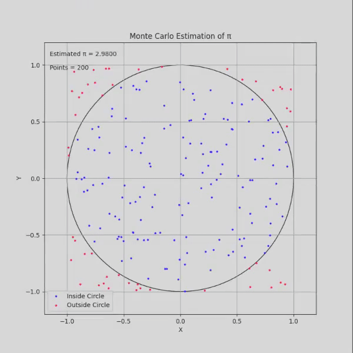
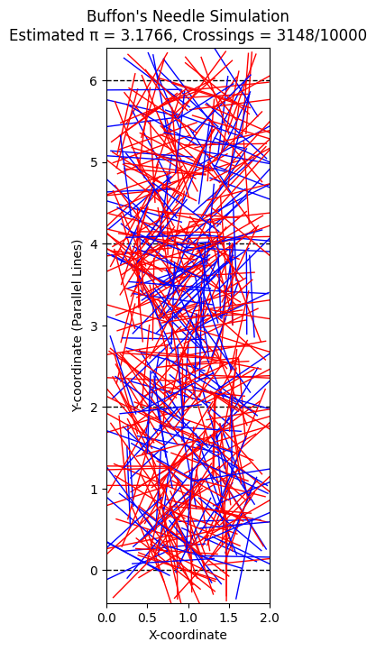

Problem 2
Estimating Pi using Monte Carlo Methods
Theoretical Foundation
Explanation: The ratio of points inside a circle to the total number of points in a square can be used to estimate \(\pi\). For a unit circle inscribed in a unit square, the area of the circle is \(\pi r^2\) where \(r = 1\), so the area is \(\pi\). The area of the square is \(1 \times 1 = 1\). The ratio of the circle's area to the square's area is \(\pi / 1 = \pi\). By generating random points and counting those that fall inside the circle, this ratio can approximate \(\pi\). Derivation: For a unit circle, the formula is \(\pi \approx 4 \cdot (\text{points inside the circle} / \text{total points})\). This arises because the circle occupies a quarter of the square's area in the first quadrant, and the factor of 4 adjusts for the full circle.
Simulation

Analysis
Accuracy Improvement: The accuracy of the estimate improves as the number of points increases. With more points, the ratio better approximates the true area ratio, reducing statistical error. Convergence and Computational Considerations: The convergence rate is proportional to \(1/\sqrt{N}\), where \(N\) is the number of points, indicating a slow but steady improvement. Computationally, this method is efficient for large \(N\) but requires sufficient random number quality to avoid bias.
Buffon's Needle Problem
Theoretical Foundation
Buffon's Needle problem estimates \(\pi\) based on the probability of a needle crossing parallel lines on a plane. A needle of length \(l\) is dropped on a plane with parallel lines spaced \(d\) apart (where \(l \leq d\)). The probability of crossing a line depends on the angle and position. Derivation: The formula is \(\pi \approx (2 \cdot \text{needle length} \cdot \text{number of throws}) / (\text{distance between lines} \cdot \text{number of crossings})\).
Vizualization

Analysis
Accuracy Effect: The number of needle drops affects the estimate's accuracy. More drops reduce variance and improve the estimate. Convergence Comparison: This method's convergence rate is also approximately \(1/\sqrt{N}\), similar to the circle-based approach, but it may require careful handling of angle distributions for accuracy.